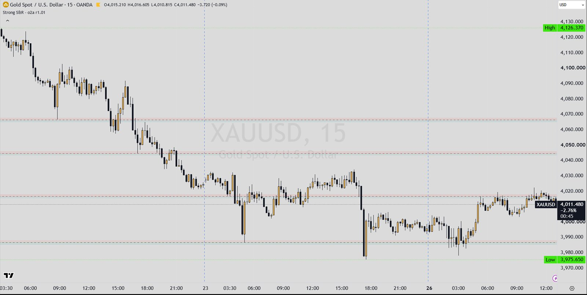

Indicators / Strong S&R
LevelsStrong S&R r1.01
Builds a pool of price levels from swing highs and lows on a higher timeframe (and an optional second, heavier-weighted timeframe), merges nearby levels, and scores each one every time a higher-timeframe candle touches it. Scores fade over time, so old, untested levels drop out. It shows the nearest qualifying levels above and below price, with a zone band and a label showing touches and score, and always shows at least one level above and below price. Described from the MT5 port.
TradingViewMetaTrader 5

What it draws
- Up to N resistance lines above price (red) and N support lines below price (green), dashed by default, extended to the right
- A zone band above and below each line (width = average upper / lower wick of the last 200 HTF candles, or a fixed %)
- Label per level: 'R' or 'S', price, touches and score (e.g. '[12x | 5.3w]') and source tag: H = main timeframe, X = extra timeframe, HX = both
- Dotted fallback level tagged 'SPC' (spacing-based) or 'PROJ' (ATR projection) when no qualifying level exists above or below price
Signals
- None
- This indicator draws levels only; it has no buy/sell signals.
- How a level is created and scored
- Each time a main-timeframe candle completes: all scores are multiplied by a decay factor (they halve every 'Memory' HTF bars; levels below 0.05 are removed), every level whose zone the candle's high-low range overlaps gets +1 touch and +1 score, and a new confirmed pivot high / low (Pivot Length bars on each side) is added, or merged into an existing level within the Merge Tolerance %. Extra-timeframe candles do the same with weight 2 (no decay step). Optional: long rejection wicks (wick at least 60% of a candle at least 0.75 ATR tall) seed levels with weight 0.25.
- Which levels are shown
- Levels with score at or above Min Score; the nearest 'Levels Above' above the current price and the nearest 'Levels Below' below it.
- Fallback level
- If no qualifying level exists on one side, a dotted level is projected beyond price (at least 0.5 ATR away), stepped by the average spacing of the last 10 levels ('SPC') or by 3 x HTF ATR ('PROJ'), and moved further out only when price reaches it.
Main settings
| Setting | Default | What it does |
|---|---|---|
| Timeframe | H1 | Main timeframe whose swings and touches build the levels. |
| + Extra TF / Extra TF | on / H4 | Second timeframe; its touches and pivots weigh 2x. |
| Pivot Length | 8 | Bars on each side a swing high / low must beat. |
| Min Score | 2.0 | Minimum score for a level to be shown. |
| Merge Tolerance % | 0.5 | Pivots within this % of an existing level are merged into it. |
| Memory (bars, 0 = never fade) | 100 | Score half-life in main-timeframe bars. |
| Create levels from rejection wicks | off | Seeds weak levels from long wicks. |
| Always show a level above & below price | on | Enables the SPC / PROJ fallback level. |
| Levels Above / Levels Below | 5 / 5 | How many levels to draw on each side. |
| Zone Width | Avg Wick | Zone band from the average HTF wick (200 bars) or a % of price (0.03%). |
Timeframes
Main timeframe (MT5 default H1) plus optional extra timeframe (MT5 default H4); levels are drawn on any chart timeframe.
Alerts
MT5 port: none. TradingView original: unclear (Pine source not available).
Closed candles and repainting
- Emulates request.security with lookahead off: on closed chart bars the levels use the last completed HTF bar; the live chart bar sees the still-forming HTF bar (option 'Count the forming HTF bar', default on), worked on a copy, so the displayed levels can change until the HTF bar closes.
- Pivots are confirmed Pivot Length HTF bars after the swing.
- Level scores depend on the full history processed, and the fallback level is anchored from the start of the calculation, so results depend on how much history is loaded.
On MetaTrader 5
- The Pine file htf_strong_sr.pine is a different indicator ('HTF Strong S&R + ZigZag + FBO + Fib + KillZones [o2a v5.3]', with min-touch counts, ZigZags, DT/DB detection and kill zones) and was not used for this description.
- MT5 defaults are the author's live TradingView chart settings (2026-10-07).
- MT5-only: mid price option (bid + half spread), calculation start time or bar count (default 40,000 chart bars), option to count the forming HTF bar, optional debug print.
- Zones are drawn as solid rectangles blended with the background; labels sit 3 bars to the right of the last bar (visible with MT5's chart shift on).